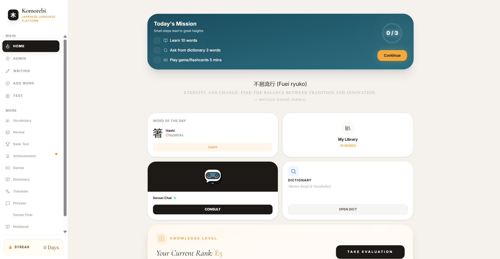
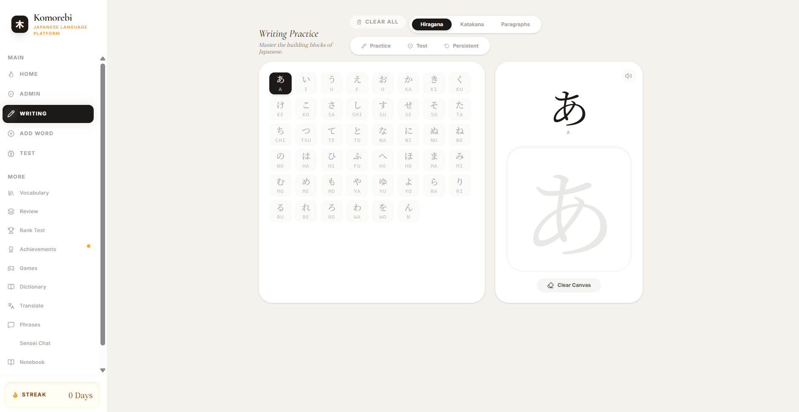
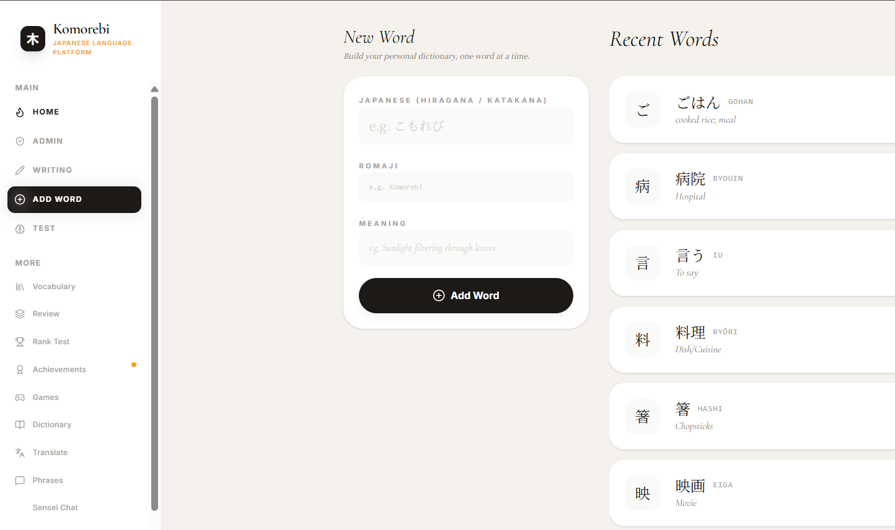
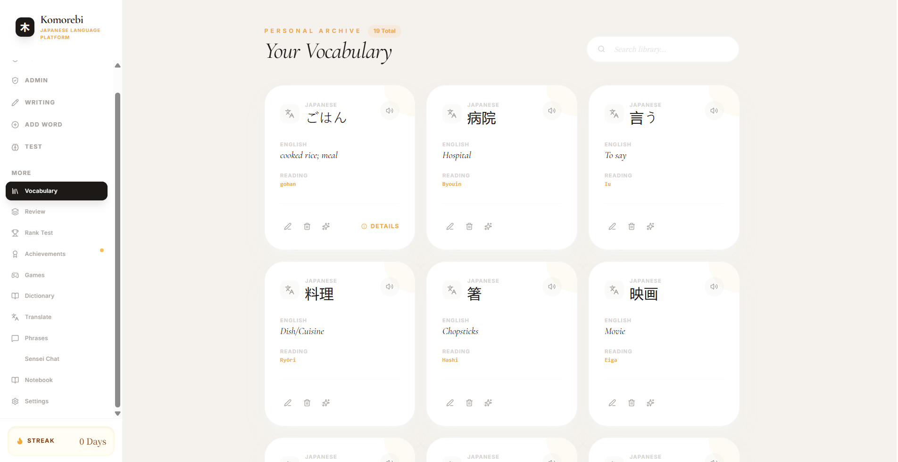
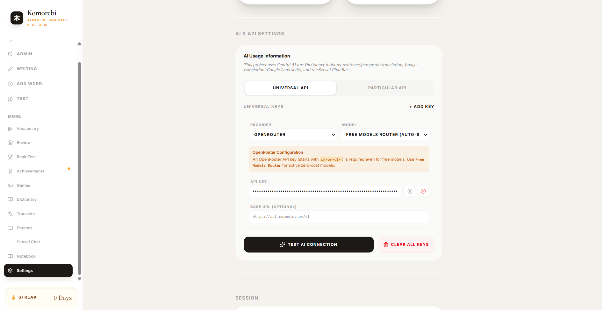

Writing Practice
Work through Hiragana, Katakana and paragraphs with dedicated practice, test and persistent modes.
From your first hiragana character to a growing personal vocabulary, Komorebi brings your Japanese learning tools together in one thoughtful space.

THE LIGHT THAT FILTERS THROUGH THE TREES
Komorebi brings together practical ways to study, practise and revisit Japanese—so your learning doesn't have to live across disconnected tools.
Work through Hiragana, Katakana and paragraphs with dedicated practice, test and persistent modes.
Add Japanese words with their readings and meanings, then build a personal collection you can revisit.
Use AI-assisted tools for learning support, dictionary lookups and language tasks with your configured provider.
Explore words and meanings, and use the language tools available inside your learning workspace.
Return to what you've learned through review activities, rank tests and games that make practice more varied.
Keep an eye on your learning activity with daily missions, achievements, streaks and a knowledge rank.
Take a closer look at the tools that make up the Komorebi experience.
Your dashboard brings your learning activity into view. See your daily mission, word of the day, personal library, Sensei Chat and knowledge level from one home screen.
Practise Hiragana and Katakana with a character grid and writing canvas. Switch between practice, test and persistent modes as you work on your writing.

Add a word with its Japanese form, reading and meaning. Your recent words and personal vocabulary library help keep the words you collect in one place.

Browse saved vocabulary, search your collection, listen to word pronunciation where available, and manage the words in your personal archive.

Komorebi includes AI and API settings for configuring supported providers and models. AI-powered features depend on a valid provider configuration and API key.

Learning a language is a collection of small efforts. Komorebi is designed to give those efforts a place to happen.
Writing practice, vocabulary, dictionary, review and learning activities are accessible from one platform.
Daily missions, streaks, achievements and knowledge ranks give you ways to notice and celebrate your progress.
Move beyond reading: practise characters, add words, test yourself and revisit your personal collection.
AI-assisted learning tools add another way to explore Japanese, with provider configuration managed in settings.
Open Komorebi, explore the learning workspace and take your next small step—one character, one word, one practice session at a time.
Komorebi is a Japanese language learning platform that brings together writing practice, vocabulary, dictionary and translation tools, review activities, progress features and AI-assisted learning.
It is designed for people who want a dedicated place to practise Japanese, build vocabulary and organise their learning activities.
Yes. Komorebi includes AI-assisted tools such as Sensei Chat. These features require a supported AI provider configuration and a valid API key.
Open the live Komorebi application using the Start Learning or Explore Komorebi buttons on this page.